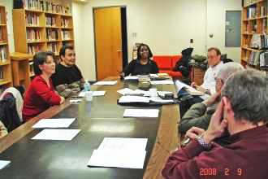
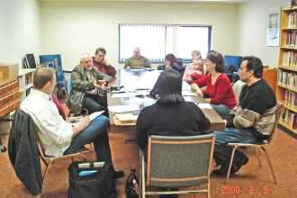
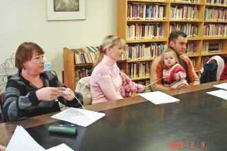

|
Семинар |
| 9 февраля 2008 года Salvation Army устроила для нас ознакомительный семинар по принципам Армии Спасения и хотя мы все грамотные и читать умеем и сайты Армии знаем, но понимаем, что в каждом конкретном случае, т.е. в каждом подразделении-церкви есть свои особенности. |
|  |  |
|  | Камень преткновения для наших христиан - форма. Человек в форме для нашего большинства -
человек насилия, человек приказа. Как много на Руси анекдотов про военных, и, в то же время,
как много страха перед военными. |
| Семинар проходил с 13 часов по 16:30 и мы были готовы дальше слушать и задавать вопросы, но
в Канаде не принято нарушать регламент и мы должны были закончить в 16 часов. Договорились
через недели две устроить продолжение.
Некоторых смущали еще две "проблемы": необязательность водного крещения и хлебопреломления. Мы привыкли. что каждыйверующий проходит обряд водного крещения и обязательность этого аргументируют тем, что Иисус сам крестился. Я приготовлю на эту тему материал и обозримое будущее выступлю с аргументами действительно необязательного водного крещения. В АС особо подчеркивают "водного" и предлагают необходимым считать крещение Духом Святым. Впрочем, существующая практика в АС допускает водное крещение по желанию верующего. Что до хлебопреломления, то и здесь этот обряд заменен совместной трапезой и, точно также, если есть желание верующих, то и это допускается. Были вопросы о детском и молодежном служении. |